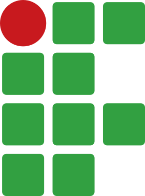

Internet
Educação em Tecnologias Digitais
Prof. Alcemy Severino
IFRN
Objetivos da Aula
- Compreender o que é a Internet e sua história.
- Diferenciar a Internet da World Wide Web (WWW).
- Conhecer os principais navegadores e suas funções.
- Explorar serviços fundamentais: e-mail e sites de busca.
- Entender os princípios básicos de segurança na rede.
O que é a Internet?
- A Internet é a “rede das redes”.
- Uma infraestrutura global de computadores interconectados.
- Permite o compartilhamento de informações e recursos mundialmente.
- Utiliza um conjunto de protocolos padrão (TCP/IP) para comunicação.
Um Breve Histórico
- Anos 1960: Origem com a ARPANET (EUA) durante a Guerra Fria.
- Objetivo inicial: Descentralizar informações militares e acadêmicas.
- Anos 1980/1990: Expansão para o meio acadêmico global e comercial.
- Hoje: Indispensável para comunicação, trabalho, estudo e entretenimento.
{kind=link}
{kind=link}
A Internet no Brasil
{kind=link}
- 1995: Abertura da Internet para fins comerciais no Brasil; Criação do Comitê Gestor da Internet no Brasil (CGI.br).
- Crescimento exponencial do acesso por banda larga e dispositivos móveis.
Como a Internet Funciona?
- Cliente-Servidor: Você (cliente) solicita uma informação, e um computador central (servidor) a envia.
{kind=link}
- Endereço IP: Cada dispositivo na rede possui uma identificação única (como um “CEP” digital).
- DNS (Domain Name System): Traduz nomes de sites (ex: www.google.com) para endereços IP compreensíveis pelas máquinas.
Internet \(\neq\) World Wide Web
- Internet: A infraestrutura física (cabos, roteadores, redes sem fio).
- WWW: Um dos serviços que rodam sobre a Internet.
- Criada por Tim Berners-Lee em 1989.
- Composta por páginas interligadas por hiperlinks, acessadas via navegadores.
Internet \(\neq\) World Wide Web
{kind=link}
Navegadores (Browsers)
- São softwares aplicativos usados para acessar e interagir com a WWW.
- Eles “traduzem” os códigos das páginas (HTML, CSS) para o formato visual que vemos.
{kind=link}
Recursos Comuns dos Navegadores
- Barra de Endereços: Para digitar a URL do site.
- Abas/Guias: Permitem abrir múltiplos sites na mesma janela.
- Favoritos/Bookmarks: Salvar sites para acesso rápido futuro.
- Histórico: Registro das páginas visitadas recentemente.
Recursos Comuns dos Navegadores
{kind=link}
URL: O Endereço na Web
- URL (Uniform Resource Locator) é o endereço completo de uma página.
- Estrutura básica:
http://ouhttps://(Protocolo)www(Subdomínio)meusite(Domínio).com.br(Extensão/País)
Correio Eletrônico (E-mail)
- Um dos serviços mais antigos e essenciais da Internet.
- Permite envio e recebimento de mensagens e arquivos (anexos).
- Estrutura do endereço:
nome_do_usuario @ provedor . com - Utilizado para comunicação formal, cadastros e recuperação de senhas.
Como Funciona o E-mail
- Caixa de Entrada (Inbox): Onde chegam as mensagens.
- Rascunhos: Mensagens escritas, mas não enviadas.
- Spam/Lixo Eletrônico: Mensagens indesejadas (geralmente publicidade em massa ou golpes).
- CC e CCO: Com Cópia e Com Cópia Oculta.
Como Funciona o E-mail
{kind=link}
Sites de Busca
- Motores de pesquisa são sistemas projetados para encontrar informações na WWW.
- Eles rastreiam, indexam e ranqueiam as páginas da web.
- Principal exemplo: Google.
- Outros: Bing, Yahoo, DuckDuckGo.
Dicas para Buscas Eficientes
- Use palavras-chave (foco no termo principal, evite frases longas).
- Aspas duplas (” “): Pesquisar pela frase exata.
- Sinal de menos (-): Excluir uma palavra da busca.
- Tipo de arquivo (filetype:pdf): Buscar apenas documentos em PDF.
Computação na Nuvem
- Armazenamento e processamento de dados em servidores online.
- Você não precisa salvar tudo no seu pen drive ou disco rígido local.
- Vantagem: Acesso aos arquivos de qualquer lugar e qualquer dispositivo.
- Ferramentas: Google Drive, Microsoft OneDrive, Dropbox.
Segurança na Internet
- Malware: Softwares maliciosos (vírus, cavalos de troia).
- Phishing: “Pescarias” digitais. E-mails ou sites falsos tentando roubar dados (senhas, cartões).
- Engenharia Social: Manipulação psicológica para enganar usuários.
Dicas de Segurança
- Senhas Fortes: Misture letras maiúsculas, minúsculas, números e símbolos. Não use datas de nascimento.
- Autenticação em Duas Etapas (2FA): Uma camada extra de segurança (ex: código via SMS ou app).
- Mantenha sistemas operacionais, antivírus e navegadores atualizados.
Cuidados com Downloads e Links
- Desconfie de e-mails urgentes ou promoções “boas demais para ser verdade”.
- Verifique sempre o remetente real do e-mail.
- Faça downloads apenas de sites oficiais.
- Cuidado ao usar computadores públicos ou redes Wi-Fi abertas para acessar contas bancárias.
Cartilhas CERT.br
- O CERT.br (Centro de Estudos, Resposta e Tratamento de Incidentes de Segurança no Brasil) oferece cartilhas gratuitas sobre segurança na Internet.
{kind=link}
{kind=link}
Cidadania Digital e Ética
- A Internet não é “terra sem lei”.
- Tudo o que fazemos deixa um rastro digital (pegada digital).
- Respeito aos direitos autorais (evitar plágio em trabalhos acadêmicos).
- Cuidado com a disseminação de Fake News (Notícias Falsas); verifique a fonte antes de compartilhar.
Resumo da Aula
- A Internet conecta o mundo e a Web facilita o acesso visual aos dados.
- Ferramentas como navegadores, e-mails e buscadores são a base da nossa interação digital.
- A nuvem transformou a forma como armazenamos arquivos.
- A segurança e a ética são responsabilidades de todos os usuários.
Dúvidas?
- Perguntas, comentários ou contribuições?
- Próxima aula: Inteligência Artificial na Educação.
- Leitura recomendada: Cartilha de Segurança para Internet (CERT.br).
- Obrigado pela atenção!
Referências utilizadas
- CERT.br. Cartilha de Segurança para Internet. Versão 4.0. CGI.br/NIC.br, 2012.
- Fustinoni, D. F. R.; Fernandes, F. C.; Leite, F. N. Informática Básica para o Ensino Técnico Profissionalizante. IFB, 2013.
- Borges, R. P.; Almeida, L. M. G. Informática. IFRN, 2014.
- Parreira, F. J. et al. Aplicativos Computacionais Aplicados à Educação. UFSM, 2017.
- Silveira, S. R. et al. Metodologia do Ensino e da Aprendizagem em Informática. UFSM, 2018.
Este material foi produzido pelo Prof. Alcemy Gabriel para uso educacional.
Licença de Uso (CC BY-NC 4.0)
Você tem o direito de:
- Compartilhar: copiar e redistribuir o material.
- Adaptar: remixar, transformar e criar a partir do material.
Sob as seguintes condições:
- Atribuição: Você deve dar o crédito apropriado ao autor.
- Não Comercial: Você não pode usar o material para fins comerciais.

Para uso comercial ou outras finalidades não listadas, entre em contato para solicitar autorização.

Operador de Computador